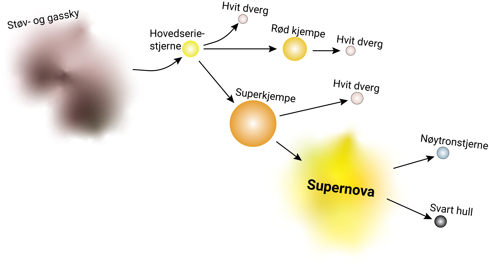
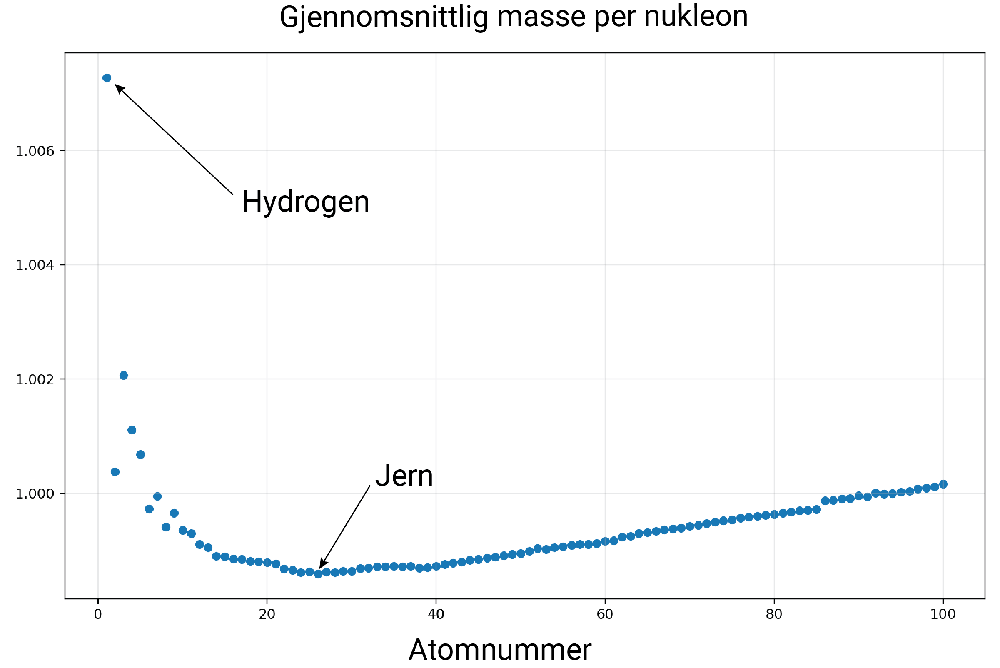
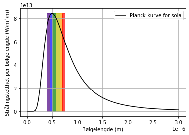
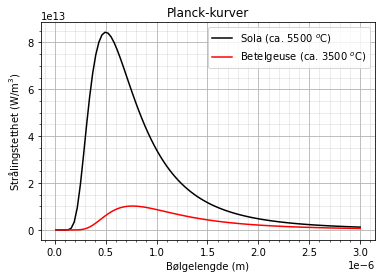
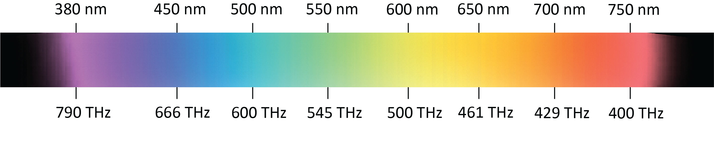
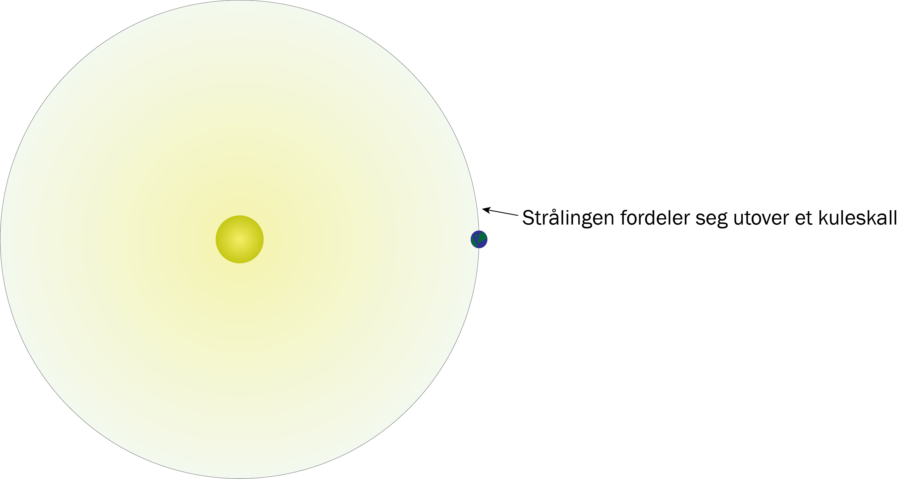
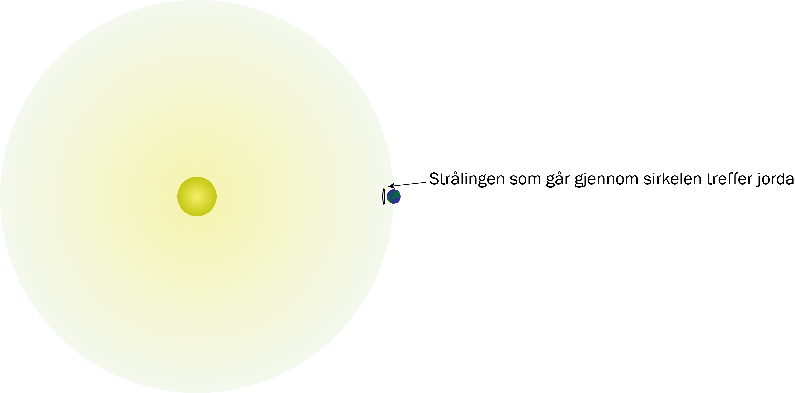
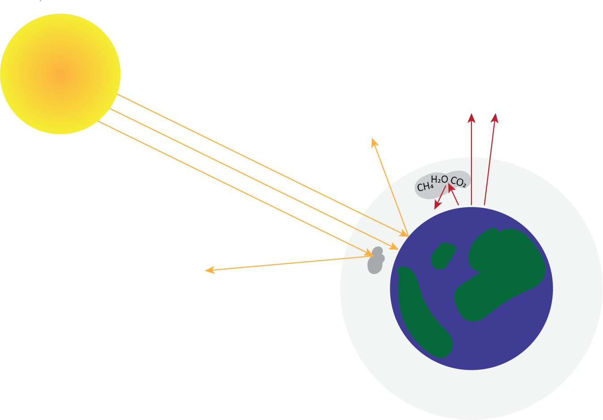
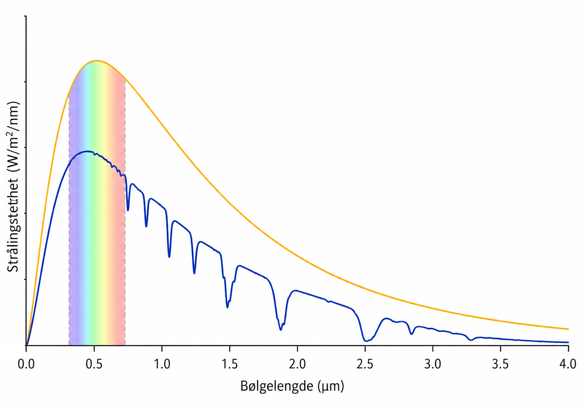

Stråling og stjerner
Du skal ha kompetanse om
- fusjonsprosesser i stjerner
- svarte legemer og Planck-kurver
- Stefan-Boltzmanns lov \(P = \sigma T^4\)
- Wiens forskyvningslov \(\lambda_{\text{topp}} = \frac{a}{T}\)
- strålingen fra sola på jorda
- drivhuseffekten
Fusjonsprosesser i stjerner
I stjerner smelter atomkjerner sammen (fusjonerer) og danner nye grunnstoffer. Den vanligste reaksjonen i sola er at hydrogen blir til helium gjennom denne prosessen:

Netto reaksjonslikning for prosessen er \( 4{}^{1}_1\text{H} \rightarrow {}^{4}_2\text{He} + 2e + 2\gamma \)
\({}^{4}_2\text{He}\) er en skrivemåte for at heliumatomet (He) har 2 protoner og 4 kjernepartikler (2 protoner + 2 nøytroner).
Massesvinn: I fusjonsprosesser endrer massen seg. Når massen reduseres kaller vi reduksjonen for massesvinn.
Einsteins \(E = mc^2\): Massesvinnet frigjøres som energi. Energien kan beregnes med \(E = mc^2\), hvor \(m\) er endringen av masse og \(c = 3\text{,}00 \cdot 10^8 \) m/s er farten til lyset (en konstant).
Eksempel
Massen til \({}^{1}_1\text{H}\) er \(1\text{,}67 \cdot 10^{-27}\) kg
Massen til \({}^{4}_2\text{He}\) er \(6\text{,}64 \cdot 10^{-27}\) kg
Massen til et elektron er \(9\text{,}11 \cdot 10^{-31} \) kg
Beregn energien som frigjøres i reaksjonen \( 4{}^{1}_1\text{H} \rightarrow {}^{4}_2\text{He} + 2e + 2\gamma \).
Siden massen til elektronet (\(e\)) er så liten sammenlignet med de andre massene, ser vi bort fra den.
Lys/fotoner (\(\gamma\)) har ingen masse.
Massesvinnet blir dermed:
\[ \Delta m = m_{\text{før}} - m_{\text{etter}} = 4 \cdot 1\text{,}67 \cdot 10^{-27} - 6\text{,}64 \cdot 10^{-27} = 4\text{,}0 \cdot 10^{-29} \text{ kg} \]Energien som frigjøres blir:
\[ E = mc^2 = 4\text{,}0 \cdot 10^{-29} \cdot (3\text{,}00 \cdot 10^8)^2 = 3\text{,}6 \cdot 10^{-12} \text{ J} \]Eksempel
Sola stråler totalt ut omtrent \(3\text{,}8 \cdot 10^{26}\) J energi per sekund.
Hvor mye masse mister sola hvert sekund?
\[ E = mc^2 \;\;\Rightarrow\;\; m = \frac{E}{c^2} = \frac{3,8 \cdot 10^{26}}{(3,00 \cdot 10^8)^2} = \frac{3\text{,}8 \cdot 10^{26}}{9,0 \cdot 10^{16}} \approx 4\text{,}2 \cdot 10^9 \text{ kg} \]
Reaksjonen \(4{}^{1}_1\text{H} \rightarrow {}^{4}_2\text{He} + 2e + 2\gamma\) er den vanligste reaksjonen i stjerner, men det skjer også andre reakasjoner. Hvilke reaksjoner som skjer i stjerner avhenger av størrelsen til stjerna, og det avhenger av hvor stjerna er i livet sitt.
Diagrammet nedenfor viser livssyklusen til stjerner: En stor sky av hydrogen (og noen andre grunnstoffer) trekker seg sammen på grunn av gravitasjon. Når temperaturen og trykket i kjernen blir høyt nok, starter fusjonsprosesser, og en stjerne er født. Hva som skjer videre avhenger av massen til stjerna.

De fleste stjerner er såkalte hovedseriestjerner, et begrep som kommer fra en måte vi katogoriserer stjerner på i et Hertzsprung-Russell-diagram. I hovedseriestjerne-fasen fusjonerer hydrogen til helium i kjernen (slik som i sola). Hvor lenge en stjerne er i denne fasen, og hva som skjer videre, avhenger av massen; Tunge stjerner bruker opp drivstoffet raskere enn lette stjerner. Tunge stjerner (nederste del av diagrammet) får også en mer dramatisk avslutning på livet enn lette stjerner.
Når hydrogenet i kjernen begynner å ta slutt, trekker kjernen til en stjerne seg sammen samtidig som de ytre delene av stjernen utvider seg. Stjernen blir da en rød kjempe eller superkjempe. På grunn av sammentrekningen av kjernen, øker temperaturen i kjernen. Den høyere temperaturen i kjernen gjør at helium kan begynne å fusjonere til karbon gjennom den såkalte trippel-alfa-prosessen:
\[ 3 \, ^4_2\text{He} \;\rightarrow\; ^{12}_6\text{C} + \gamma \]I stjerner med veldig stor masse kan det bli varmt nok i kjernen av stjernen til at karbonet kan fusjonere videre til tyngre grunnstoffer, f.eks. gjennom disse reaksjonene:
\[ ^{12}_6\text{C} + ^{12}_6\text{C} \;\rightarrow\; ^{24}_{12}\text{Mg} + \gamma \] \[ ^{12}_6\text{C} + ^{12}_6\text{C} \;\rightarrow\; ^{20}_{10}\text{Ne} + ^4_2\text{He} \] \[ ^{12}_6\text{C} + ^4_2\text{He} \;\rightarrow\; ^{16}_8\text{O} + \gamma \]I de mest massive stjernene er det varmt nok i kjernen til at fusjonsprosessene fortsetter videre gjennom flere stadier hvor det dannes blant annet silisium, svovel og kalsium. Og til slutt kan det dannes jern:
\[ ^{1}_{1}\text{He} \;\rightarrow\; \dots \;\rightarrow\; ^{12}_{6}\text{C} \;\rightarrow\; \dots \;\rightarrow\;^{28}_{14}\text{Si} \;\rightarrow\; \dots \;\rightarrow\; ^{56}_{26}\text{Fe} \]Jern er det største grunnstoffet som dannes i vanlige stjerner før de "dør". Årsaken til dette kan forklares med diagrammet nedenfor. I fusjonsprosesser opp til jern reduseres den gjennomsnittlige massen til nukleonene (protonene og nøytronene); Det kan da frigjøres energi. For å lage tyngre grunnstoffer må vi tilføre energi.

I kjernekraftverk (og atombomber) bruker man tunge grunnstoffer, som f.eks. uran, og får dem til å fisjonere til lettere grunnstoffer. I en av de mest kjente av disse reaksjonene skyter man nøytroner \(n\) inn i en \( ^{235}_{92}\text{U}\)-kjerne. Det dannes da en ustabil \(^{236}_{92}\text{U}\)-kjerne, som etter kort tid deler seg (fisjonerer), og frigjør energi: \[ n + ^{235}_{92}\text{U} \;\rightarrow\; ^{236}_{92}\text{U} \;\rightarrow\; ^{92}_{36}\text{Kr} + ^{141}_{56}\text{Ba} \]
Når kjernen i en massiv stjerne hovedsakelig består av jern, stopper energiproduksjonen opp. Tyngdekraften får da kjernen til å kollapse, og stjernen eksploderer som en supernova.
I supernovaeksplosjoner tilføres det energi fra gravitasjonskraften, slik at grunnstoffer tyngre enn jern kan dannes, for eksempel gull, bly og uran. Et kjent sitat (med litt uklar opprinnelse) sier
"Vi er alle stjernestøv"
Uttrykket kommer av at det i universets begynnelse bare fantes hydrogen og helium, og bitte litt litium. Alle andre grunnstoff er lagd i stjerner. Det meste vi ser rundt oss, inkluder deg selv, kommer derfor fra en (eller flere) supernovaeksplosjoner og/eller fra kollisjoner mellom stjerner.
Svarte legemer
Svart legeme: Et idealisert objekt som absorberer all stråling som treffer det, og sender ut stråling som bare avhenger av temperaturen. Strålingen fra et svart legeme beskrives av en Planck-kurve.
Stjerner stråler omtrent som et svart legeme. Bildet nedenfor viser Planck-kurven til et legeme med samme temperatur som sola. Regnbuen som er tegnet inn viser bølgelengdene til det synlige lyset.

\(x\)-aksen viser bølgelengden til strålingen (lyset) som sendes ut.
\(y\)-aksen viser hvor mye energi som sendes ut fra 1 m\(^2\) per sekund av hver bølgelengde.
Stefan-Boltzmanns lov: Effekten per kvadratmeter fra et svart legeme er \( P = \sigma T^4 \) hvor \(\sigma = 5\text{,}67 \cdot 10^{-8} \text{W/m}^2\text{K}^4\) er en konstant. Arealet under Planck-kurven gir også denne effekten.
Wiens forskyvningslov sier at bølgetoppen i Planck-kurven er \(\lambda_{\text{topp}} = \frac{a}{T}\), hvor \(a=2\text{,}90 \cdot 10^{-3}\) mK.
Alle svarte legemer har lignende form på Planck-kurven som den ovenfor, men:
- varmere legemer har høyere topp, som er lengre mot venstre
- kaldere legemer har lavere topp, som er lengre mot høyre
Figuren nedenfor viser Planck-kurven til sola sammen med Planck-kurven til stjernen Betelgeuse.

Eksempel
Betelgeuse har overflatetemperatur på ca. 3800 K og radius på ca. \(5\text{,}0 \cdot 10^{11}\) m.
Sola har overflatetemperatur på ca. 5770 K og radius på ca. \(7\text{,}0 \cdot 10^{8}\) m.
Sammenlign fargene og den totale, utstrålte effekten til stjernene.
Sola sender ut mest stråling litt til venstre for midten av det synlige spekteret, men sender ut mye stråling med alle farger, og ser derfor gulaktig/hvit ut. Betelgeuse sender mest ut lys med lengre bølgelengde, og ser derfor mer rød/oransje ut enn sola.

For å sammenligne den utstrålte effekten bruker vi Stafan-Boltzmanns lov og formelen for arealet av en kuleflate: \[ P = \sigma T^4 \;\;\; \text{ og } \;\;\; A_{\text{overflate}} = 4\pi r^2 \] Dette gir at forholdet mellom utstrålt effekt blir \[ \frac{\sigma T_B^4 \cdot 4\pi r_{B}^2}{\sigma T_s^4 \cdot 4\pi r_{s}^2} = \frac{T_B^4 \cdot r_B^2}{T_S^4 \cdot r_S^2} = \left(\frac{3800}{5770}\right)^4 \cdot \left(\frac{5\text{,}0 \cdot 10^{11}}{7\text{,}0 \cdot 10^8}\right)^2 \approx 9 \cdot 10^4 \]
Betelgeuse har altså omtrent \(9 \cdot 10^4\) ganger høyere effekt enn sola.
(Betelgeuse er "kjøligere" enn sola, men har mye større radius)
Strålingen fra sola på jorda
Eksempel
Sola har overflatetemperatur på ca. 5770 K og radius på ca. \(7\text{,}0 \cdot 10^{8}\) m.
Avstanden mellom jorda og sola er \(1\text{,}49 \cdot 10^{11}\) m.
Bestem innstrålingstettheten fra sola på jorda.
Totalt utstrålt effekt er
\[ P \cdot A = \sigma \cdot T^4 \cdot 4\pi \cdot r_{\text{sol}}^2 = 5\text{,}67 \cdot 10^{-8} \cdot 5770^4 \cdot 4\pi \cdot \left( 7\text{,}0 \cdot 10^{8} \right)^2 = 3\text{,}8027 \cdot 10^{26} \text{ W} \]
Strålingstettheten ved jorda blir
\[ \frac{P_{\text{sola}}}{4\pi \cdot d^2} = \frac{3\text{,}8027 \cdot 10^{26} \text{ W}}{4\pi \cdot (1\text{,}49 \cdot 10^{11} \text{ m})^2 } = 1360 \text{ W/m}^2 \]Eksempel
Innstrålingstettheten fra sola på jorda er 1360 W/m\(^2\). Radiusen til jorda er \(6\text{,}37 \cdot 10^{6}\) m.
Anta at jorda er et svart legeme.
Bestem temperaturen til jorda.

Total stråling som treffer jorda blir:
\[ P = 1360 \cdot \pi r^2 = 1360 \cdot \pi \cdot (6\text{,}37 \cdot 10^{6})^2 = 1\text{,}7342 \cdot 10^{17} \text{ W} \] Denne strålingen skal varme opp hele jorda, så vi må dele på overflatearealet av jorda: \[ \frac{1\text{,}7342 \cdot 10^{17}}{4\pi \cdot (6\text{,}37 \cdot 10^{6})^2} = 340 \text{ W/m}^2 \]Stefan-Boltzmanns lov gir overflatetemperaturen:
\[ P = \sigma T^4 \;\;\; \Rightarrow \;\;\; T = \left( \frac{340}{5\text{,}67 \cdot 10^{-8}} \right)^{\frac{1}{4}} = 267 \text{ K} \approx - 6\text{,}0 ^\text{o}\text{C}\]Drivhuseffekten
Gjennomsnittstemperaturen på jorda er ca. \(15 \; ^\text{o} \text{C}\), noe som stemmer ganske bra, men ikke helt med eksempelet over.
Det er i grove trekk to årsåker til at eksempelet over bare gir nesten riktig temperatur:
- atmosfæren fungerer som et drivhus (gir varmere jord)
- noe av strålingen som treffer jorda reflekteres tilbake til verdensrommet (gir kaldere jord)

Drivhuseffekten: Noen av gassene i atmosfæren, f.eks. \(\text{CO}_2\), \(\text{H}_2\)\(\text{O}\) og \(\text{CH}_2\), absorberer infrarød stråling som er på vei ut i verdensrommet, og sender ca. halvparten av det de absorberer tilbake til jorda.
Illustrasjonen nendenfor viser strålingen fra sola øverst i atmosfæren (øverste graf) og strålingen vi mottar ved bakken (nederste graf). Den nederste grafen er jevnt over lavere fordi noe av strålingen reflekteres. "Duppene" i den nederste grafen oppstår fordi drivhusgasser i atmosfæren absorberer visse bølgelengder.

Absorpsjonsfaktor (\(\epsilon\)): Absorpsjonsfaktoren sier hvor stor andel av varmestrålingen fra jorda som absorberes av atmosfæren. Strålingen som absorberes sendes ut igjen i alle retninger; Omtrent halvparten tilbake mot jordoverflaten og halvparten ut i verdensrommet.
Albedo (\(\alpha\)) er et mål på hvor mye lys en overflate reflekterer. Albedo er definert som den brøkdelen av lyset som blir reflektert. En albedo på \(\alpha\) = 0,30 vil for eksempel si at 30 prosent av innfallande lys blir reflektert tilbake.
| Overflate | Albedo |
|---|---|
| Jordkloden (gjennomsnitt) | 0,30 |
| Svart jord | 0,10 |
| Tørr, grå jord | 0,35 |
| Skog | 0,15 |
| Vann | 0,06 |
| Nysnø | 0,90 |
| Skyer | 0,30–0,80 |
Eksempel
Vi kaller innstrålingstettheten fra sola på jorda \(E\), og radiusen til jorda \(r\).
Albedoen til jorda er \(\alpha\) og abropsjonsfaktoren er \(\epsilon\).
Bestem et uttrykk for temperaturen til jorda.
Den totale effekten jorda mottar fra sola er
\[ P = (1-\alpha) \cdot E \cdot \pi r^2 \]Effekten per kvadratmeter, i gjennomsnitt på hele overflaten blir
\[ \frac{P}{4\pi r^2} = \frac{(1-\alpha)\cdot E \cdot \pi r^2}{4\pi r^2} = \frac{(1-\alpha) \cdot E}{4} \]I tillegg mottar får jorda stråling fra seg selv på grunn at drivhuseffekten; Halvparten av varmestrålingen som sendes ut sendes tilbake til bakken, så Stefan-Boltzmannslov gir at total innstrålingstetthet blir
\[ \sigma T^4 = \frac{(1-\alpha) \cdot E}{4} + \frac{\epsilon}{2} \cdot \sigma T^4 \]Når vi løser likningen med hensyn på temperaturen får vi
\[ T = \left( \frac{(1 - \alpha)E}{4\sigma + 2\sigma \epsilon} \right)^{\frac{1}{4}} \]Fra uttrykket i eksempelet over ser vi at det som skaper global oppvarming er
- høyere \(\epsilon\) (mer klimagasser)
- lavere \(\alpha\) (f.eks. mindre snø og mer asfalt istedenfor skog)
Hvis vi setter inn \(E = 1360 \) W/m\(^2\), \(\alpha\) = 0,30 og \(\epsilon\) = 0,77 i formelen over, så får vi en temperatur på \(15 \; ^\text{o} \text{C}\), som er den virkelige temperaturen på jorda. Altså absorberer atmosfæren omtrent 77 % av varmestrålingen jorda sender ut ifølge drivhusmodellen som er brukt i eksempelet over.